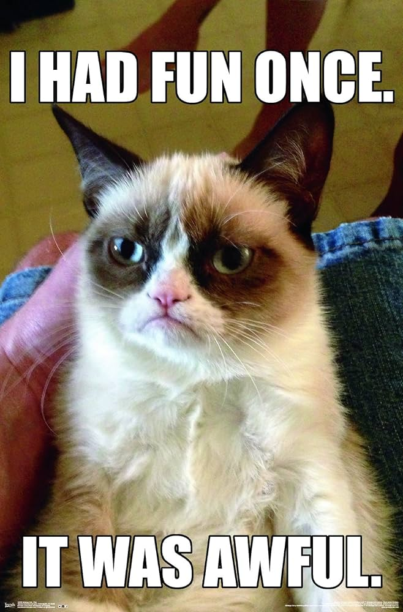

About Grumpy
True to his name, Grumpy is grouchy, pessimistic and overbearing. He is often depicted with a scowl and crossed arms to accentuate these qualities. Underneath his gruff exterior, however, Grumpy possesses a warm heart but seldom chooses to show it.